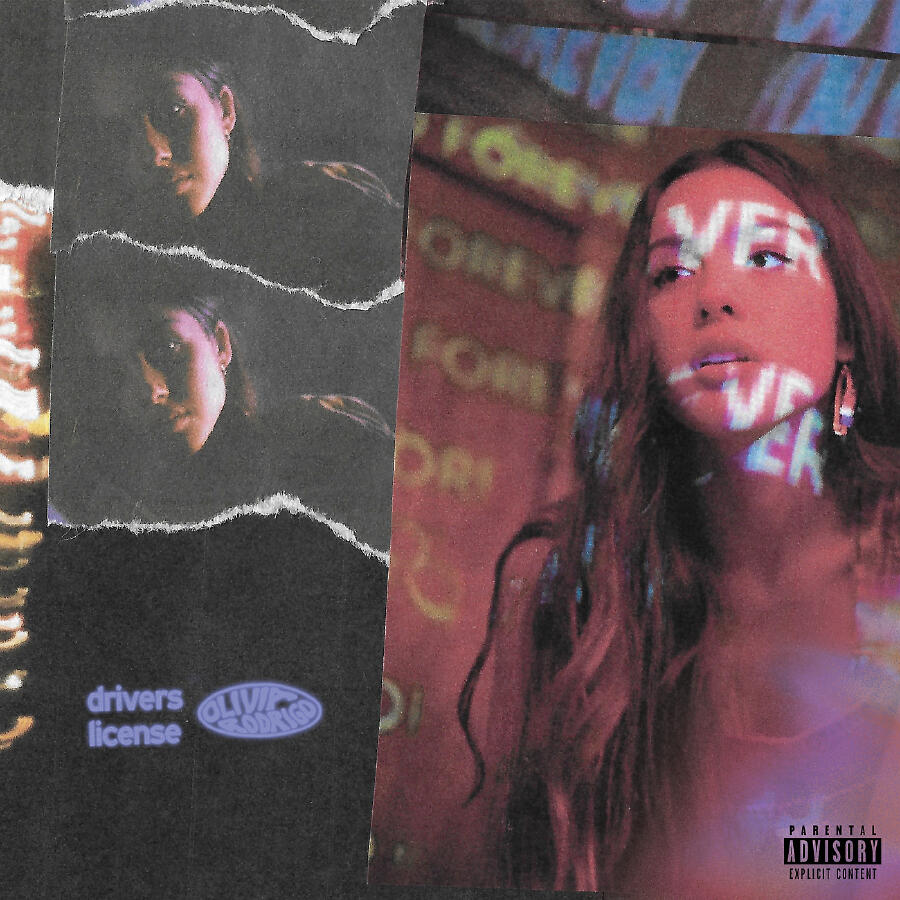
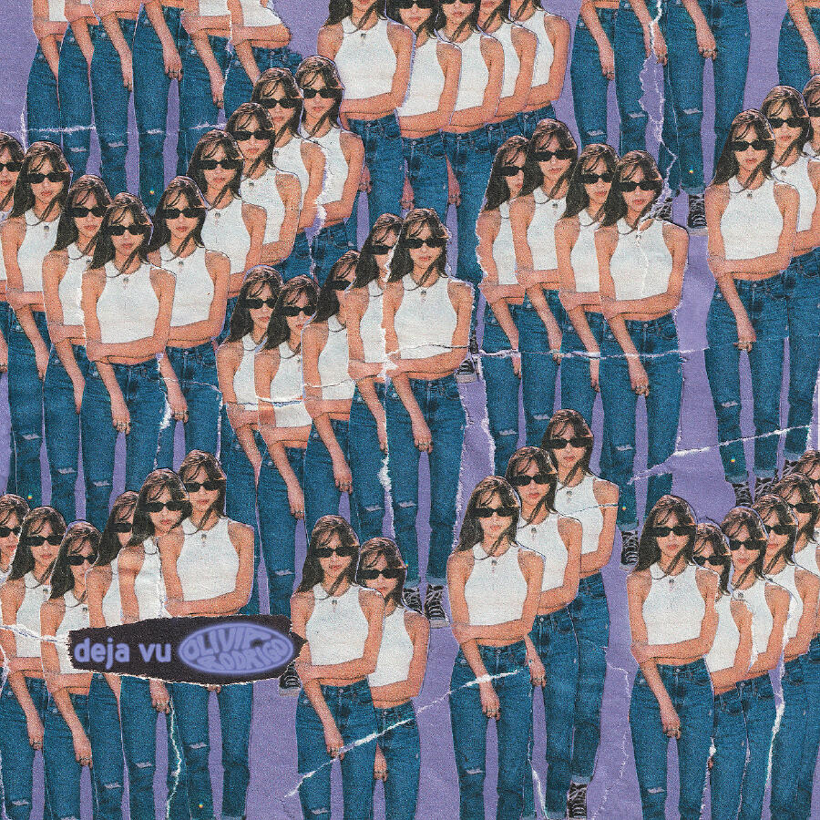
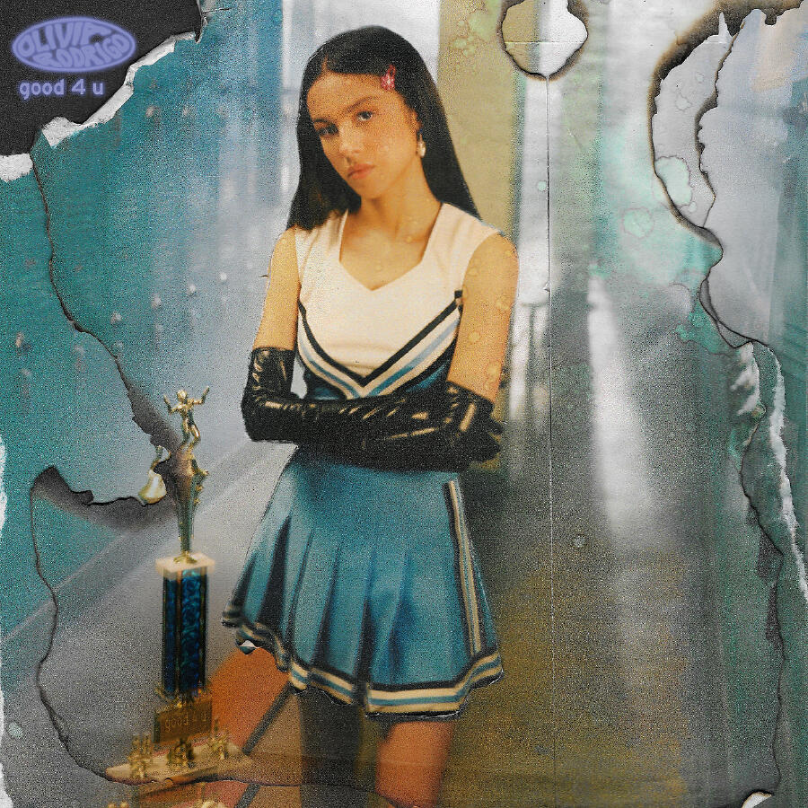

Drivers License
Is a pop power ballad about the raw pain of teenage heartbreak. The song narrates getting a driver's license, an event once planned to be shared with an ex-partner. Instead, the singer drives alone through the suburbs, overwhelmed by memories and jealousy over her ex moving on with another girl. It captures themes of first love, betrayal, loneliness, and emotional vulnerability.
The track is defined by its minimalist piano arrangement that gradually builds into a soaring, cinematic climax with layered harmonies. Olivia Rodrigo's vocal performance shifts from soft, breathy whispers to an intense, cathartic belt, perfectly conveying the raw emotion of the lyrics. This dynamic contrast and intimate storytelling turned the song into a massive global hit and a defining Gen Z anthem for heartbreak.
Deja Vu
The song is about watching an ex-partner repeat the exact same romantic gestures with a new girlfriend. It lists shared memories like driving by the coast, tauntingly asking if his new partner thinks these moments are unique.
Musically, it shifts from piano ballads to ethereal psych-pop featuring dreamy synths and glitchy distortions. This sound was chosen specifically to avoid being pigeonholed as just another sad breakup track after "drivers license.
Taylor Swift received co-writing credits due to similarities with her song "Cruel Summer." While this sparked feud rumors, Rodrigo has denied any bad blood between them.


Good 4 U
The third single from Olivia Rodrigo's debut album Sour, released in May 2021. It marks a sharp musical departure from her previous piano ballads, embracing an angsty pop-punk and grunge sound heavily inspired by early 2000s acts like Paramore and Avril Lavigne.
The song serves as a sarcastic "screamo-laced" breakup anthem directed at an ex-partner who moved on with shocking ease. While the narrator is falling apart—crying on the bathroom floor and losing her mind—the ex appears happy, healthy, and completely unaffected, prompting biting lines like "Well, good for you, I guess you're getting everything you want".
SOUR
Olivia Rodrigo's debut album SOUR instantly transformed her from a Disney actress into a global superstar, but its massive success was heavily shadowed by controversy. The record shattered Spotify streaming records and earned three Grammy Awards, yet it simultaneously ignited intense public debate regarding the originality of her songwriting.
The project was entangled in accusations of plagiarism and high-profile relationship drama. Lead single "drivers license" fueled speculation about a love triangle involving Joshua Bassett & Sabrina Carpenter, while tracks like "good 4 u" and "deja vu" required giving writing credits to Paramore & Taylor Swift due to melodic similarities.